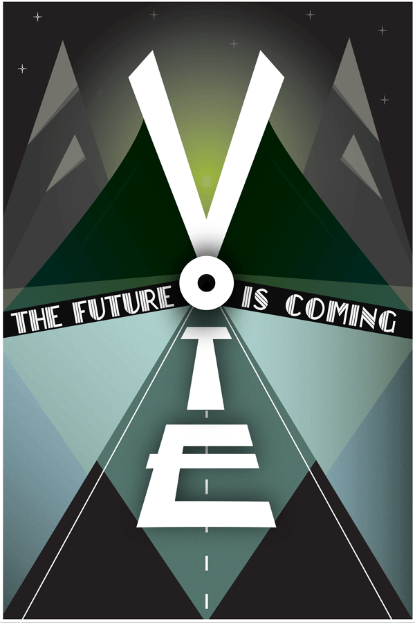
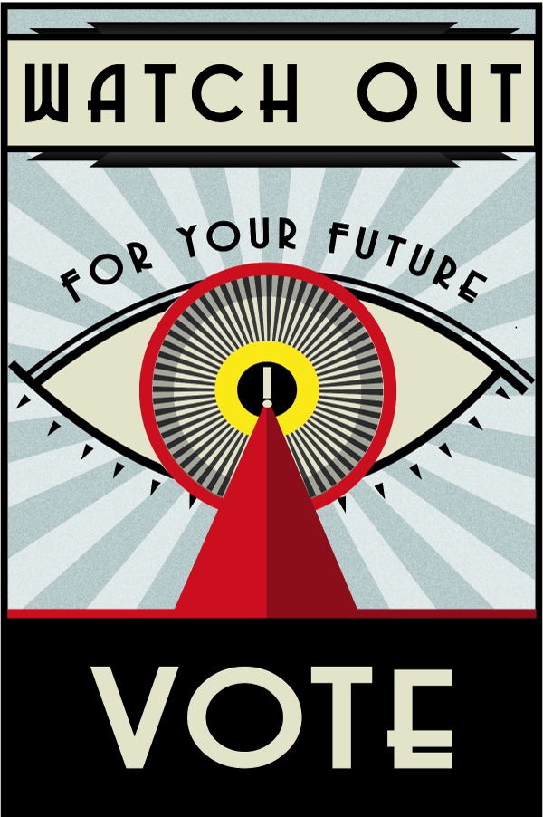

According to the Pew Research Center, voting turnout for youths is on a decline (ut oh). In an effort to encourage the youths to vote, I designed these Art-Deco style voting posters for my advanced visual design class.
The heavily geometric posters make use of a variety of art deco motifs such as sunbursts, zigzags and vivid colors to communicate a sense of urgency and alarm for what lies ahead if one does not choose to vote. Both posters reference Art Deco's optimism for the future, but display it with a dystopian twist that is perhaps a bit more cynical and contemporary.
 